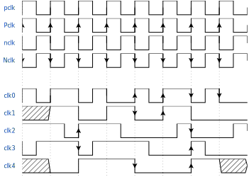

clocks
However, most digital design are synchronous. The reference being a clock let’s see how to define a clock.
At first a clock is normal digital signal with specific bricks for rising edge clocks or falling edge clocks.
jsonml
yaml
toml


set the content of the file to
{signal: [
{name: "pclk", wave: "p........"},
{name: "Pclk", wave: "P........"},
{name: "nclk", wave: "n........"},
{name: "Nclk", wave: "N........"},
{},
{name: 'clk0', wave: 'phnlPHNL' },
{name: 'clk1', wave: 'xhlhLHl.' },
{name: 'clk2', wave: 'hpHplnLn' },
{name: 'clk3', wave: 'nhNhplPl' },
{name: 'clk4', wave: 'xlh.L.Hx' },
]}
then generate an image with undulate
undulate -f svg -i step_2_dig.json -o step_2_dig.svg
set the content of the file to
pclk:
wave: "p......."
Pclk:
wave: "P......."
nclk:
wave: "n......."
Nclk:
wave: "N......."
spacer:
wave: ""
clk0:
wave: "phnlPHNL"
clk1:
wave: "xhlhLHl."
clk2:
wave: "hpHplnLn"
clk3:
wave: "nhNhplPl"
clk4:
wave: "xlh.L.Hx"
then generate an image with undulate
undulate -f svg -i step_2_dig.yaml -o step_2_dig.svg
set the content of the file to
pclk.wave = "p......."
Pclk.wave = "P......."
nclk.wave = "n......."
Nclk.wave = "N......."
spacer.wave = ""
clk0.wave = "phnlPHNL"
clk1.wave = "xhlhLHl."
clk2.wave = "hpHplnLn"
clk3.wave = "nhNhplPl"
clk4.wave = "xlh.L.Hx"
then generate an image with undulate
undulate -f svg -i step_2_dig.toml -o step_2_dig.svg
Note
Upper case characters has an arrow on the edge of reference
notice the spacing with
{},spacer:, orspacer.wave = ""In yaml spacer can be an empty string or a string starting withspacer.For toml any string starting withspaceris considered as a spacer.slewing is considered even for clock signals
Tip
try to modify the slew of signal by adding slewing: 18 attribute or slewing: 0